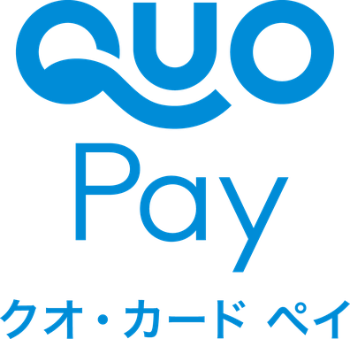
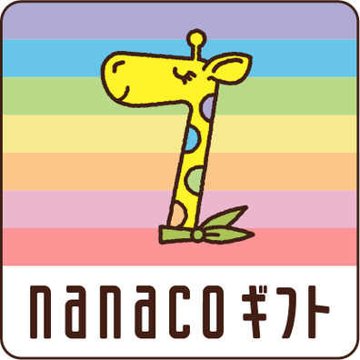
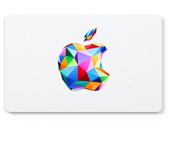

選べるポイント一覧
ご自宅で受け取った荷物の送り状（伝票）を撮影して提出し、簡易アンケートに回答するとトリイクポイントが貯まります。貯まったトリイクポイントは、以下のお好きなポイント・ギフトに1ポイント＝1円相当（等価）で交換できます。
ポイント数および1か月あたりの上限は、利用規約第12条にもとづき毎月1日付で改定する場合があります。
翌月のポイント数は、毎月末日までにこのページの「来月のポイント」でお知らせします。
ポイント還元の流れ
- STEP 01送り状を撮影して提出
- STEP 02簡易アンケートに回答
- STEP 03トリイクポイントが貯まる
- STEP 04お好きなポイントに等価で交換
ポイントの対象となる回数についてポイントとご利用回数は、1日1回までです
ポイントとご利用回数は、1日1回までです。同じ日に2枚目以降の送り状を提出された場合、提出自体は可能ですが、その送り状はポイントの対象外となり、ポイントは付与されません。
送り状は、荷物を受け取った当日にご提出ください。また、同じ送り状を別の日に提出し直すことはできません。
- 1日は、日本時間の0時から23時59分までです。
- 同じ日の2枚目以降の送り状は、ご利用回数にも数えません。会員ランクの判定や月利用回数ボーナスの回数にも含まれません。
- 2枚目以降の送り状がポイントの対象外になるのは、1日1回までの決まりによるもので、否認ではありません。ほかのご利用には影響しません。
- 当社から撮り直し（再提出）をお願いした送り状は、別の日でも、そのご案内に沿ってご提出いただけます。
- トリイクスポットでのご利用は、自宅deトリイクのご利用回数とは別に数えます。
- くわしくは、利用規約（自宅deトリイク利用規約 第11条）をご覧ください。
交換できるポイント・ギフト一覧

QUOカードPay
nanacoギフト
Apple Gift Cardこのほか、dポイントギフト・図書カードネットギフト・ドリンクチケットにも交換いただけます。
- トリイクポイントは、外部サービス「デジコ（株式会社DIGITALIO提供）」を通じて、お好きなポイント・ギフトに交換します。
- 各ポイント・ギフトの詳細仕様や交換条件は、外部サービス側の規定に準じます。
- 付与されるトリイクポイント数は、会員ランクおよびアンケートの回答内容に応じた加算により異なります。
- 1か月あたりに付与されるトリイクポイントには上限があり、上限は会員ランクにより異なります（上限値は「会員ランク別の付与ポイント」に掲示しています）。上限に達した場合、その月の残りの期間は、ご利用いただいてもポイントは付与されません。
- ポイント数および1か月あたりの上限は毎月見直し、変更する場合は毎月1日付で改定します。翌月に適用するポイント数は、毎月末日までに本サイトで開示します。
- トリイクポイントは、ご利用の受付後、当社所定の確認を経て確定します。確定は原則として受付から72時間以内に行います。確定前のポイントは交換にご利用いただけません。
- 送り状に記載された荷受人の氏名および住所が、本アプリに登録された氏名および住所と一致することを確認できない場合、ポイントは付与されません。
- ポイントを交換する際は、あらかじめ当社が指定するオンラインによる本人確認が必要です。
- 交換可能なポイント・ギフトのラインナップは、予告なく変更となる場合があります。
- トリイクポイントの有効期限は、獲得した月から6ヶ月目の月末日までとします。
2026年11月のポイント適用期間：2026年11月1日（日）〜11月30日（月）
会員ランク別の付与ポイント直近6ヶ月間の累積利用回数で判定します
| 会員ランク | 適用条件直近6ヶ月間の累積利用回数 | 基本付与1回あたり | 1回あたり最大加算をすべて満たした場合 | 1か月あたりの上限 |
|---|---|---|---|---|
| エントリー | 会員登録のみ | 1pt | 5pt | 40pt |
| スタンダード | 累積1回利用 | 1pt | 6pt | 60pt |
| ブロンズ | 累積10回利用 | 2pt | 8pt | 90pt |
| シルバー | 累積25回利用 | 2pt | 11pt | 130pt |
| ゴールド | 累積45回利用 | 3pt | 14pt | 180pt |
| プラチナ | 累積75回利用 | 3pt | 18pt | 240pt |
| ダイヤモンド | 累積120回利用 | 4pt | 22pt | 320pt |
- 「基本付与」は、送り状の写真を提出し簡易アンケートに回答した1回につき付与されるポイントです。
- 「1回あたり最大」は、基本付与に加えて、後述の「物流にやさしい受け取り方」および任意アンケートの加算をすべて満たした場合の合計です。実際の付与ポイントは回答内容により異なります。
- 会員ランクは、直近6ヶ月間の「1回の利用」の累積回数により決定します。
- 「1回の利用」とは、受け取った荷物の送り状の写真を本アプリで提出し、簡易アンケートに回答することをいいます。
- 会員ランクは定期的に見直します。直近6ヶ月間の利用回数が基準を下回った場合、会員ランクは下位の区分に変更されます。この場合、変更の実施前に本アプリで通知します。
- 1か月あたりの上限は、月利用回数ボーナス・出店要望箇所ボーナスを含めた、その月に付与されるトリイクポイントの合計に適用されます。
物流にやさしい受け取り方で、さらに加算送り状の撮影後に届くアンケートで、当てはまるものをお答えください
-
再配達なし
一度で受け取れると、ドライバーが同じ家を二度訪れずに済みます。
-
置き配
対面で受け取らなくてよいので、配達が一度で完了します。
-
ゆっくり配送
急がない荷物はまとめて運べるので、トラックの数が減ります。
会員ランク別の加算ポイント基本付与に上乗せして付与されます
| 会員ランク | 再配達なし | 置き配 | ゆっくり配送 | 任意アンケート |
|---|---|---|---|---|
| エントリー | +1pt | +1pt | +1pt | +1pt |
| スタンダード | +1pt | +1pt | +1pt | +2pt |
| ブロンズ | +2pt | +1pt | +1pt | +2pt |
| シルバー | +2pt | +2pt | +2pt | +3pt |
| ゴールド | +3pt | +2pt | +2pt | +4pt |
| プラチナ | +4pt | +3pt | +3pt | +5pt |
| ダイヤモンド | +5pt | +4pt | +3pt | +6pt |
- 上記の加算は、基本付与に上乗せして付与されます。
- 「任意アンケート」は、再配達・置き配・ゆっくり配送以外の設問にお答えいただいた場合の加算です。
- 加算の対象となるのはアンケートでのご回答です。配送時のご指定そのものが対象となるわけではありません。
初回利用者ボーナスはじめてご利用いただく方が対象です
初回利用者ボーナスを 100pt → 20pt に変更しました。
初回利用者
初回のご利用で付与
20pt※モニターキャンペーン対象外の方に適用します。
- 初回利用者ボーナスは、初回の「1回の利用」に対して1回限り付与します。
- モニターキャンペーンの対象となる方には適用されません。
月利用回数ボーナス単月の利用回数に応じて追加付与します
-
8回目ボーナス
単月で8回利用
100pt -
15回目ボーナス
単月で15回利用
50pt
単月で15回ご利用いただいた場合、ボーナスは合計150pt
- 月利用回数ボーナスは、単月（毎月1日〜末日）の利用回数で判定し、達成した月に付与されます。
- 「1回の利用」の数え方は会員ランクと同じく、送り状の写真を本アプリで提出し、簡易アンケートに回答することをいいます。
- 会員ランクの累積回数（直近6ヶ月間）とは独立して集計します。
- 月利用回数ボーナスを含めても、1か月あたりに付与されるトリイクポイントの上限を超えて付与されることはありません。
出店要望箇所ボーナストリイクスポットを設置してほしい場所を教えてください
トリイクスポットは、商業施設や公共施設の中に設置された、安心・安全な荷物の受取スポットです。お住まいの近くにスポットができれば、ご自宅で荷物を待つ必要そのものが減ります。
「ここにあったら便利」と思う場所をアプリから教えていただくと、提出いただいた箇所数に応じてトリイクポイントが加算されます。
提出箇所数ごとの付与ポイントを変更しました。3箇所：100pt → 10pt、5箇所：130pt → 20pt、7箇所（10箇所に変更）：180pt → 50pt。
- 3箇所提出 10pt
- 5箇所提出 20pt
- 10箇所提出 50pt
- 上記は、提出いただいた箇所数ごとの累計の付与ポイントです。3箇所で10pt、5箇所まで提出すると合計20pt、10箇所まで提出すると合計50ptとなります。
- 出店要望箇所ボーナスは、本アプリにご登録の住所につき1回限りの付与です。
- 不備なく規定の箇所数をご提出いただいた場合に付与されます。
- 11箇所目以降のご提出については、ポイントは付与されません。
- トリイクスポットについて詳しくは、トリイク公式サイトをご覧ください。
2026年12月のポイント適用期間：2026年12月1日（火）〜12月31日（木）
・1回あたりの最大ポイント（会員ランク別）：ダイヤモンド 22→20pt／プラチナ 18→12pt／ゴールド 14→8pt／シルバー 11→6pt／ブロンズ 8→5pt／スタンダード 6→4pt／エントリー 5→4pt
・加算の項目「置き配」は「多様な受け取り（置き配・宅配BOXなど）」に変わります。
・月利用回数ボーナス：8回目 100→10pt／15回目 50→20pt
・お友だち紹介のポイント：紹介した方・紹介されたお友だち、それぞれ 10→30pt（お友だち紹介のページ）
会員ランク別の付与ポイント直近6ヶ月間の累積利用回数で判定します
| 会員ランク | 適用条件直近6ヶ月間の累積利用回数 | 基本付与1回あたり | 1回あたり最大加算をすべて満たした場合 | 1か月あたりの上限 |
|---|---|---|---|---|
| エントリー | 会員登録のみ | 1pt | 4pt | 40pt |
| スタンダード | 累積1回利用 | 1pt | 4pt | 60pt |
| ブロンズ | 累積10回利用 | 2pt | 5pt | 90pt |
| シルバー | 累積25回利用 | 2pt | 6pt | 130pt |
| ゴールド | 累積45回利用 | 3pt | 8pt | 180pt |
| プラチナ | 累積75回利用 | 5pt | 12pt | 240pt |
| ダイヤモンド | 累積120回利用 | 9pt | 20pt | 320pt |
- 「基本付与」は、送り状の写真を提出し簡易アンケートに回答した1回につき付与されるポイントです。
- 「1回あたり最大」は、基本付与に加えて、後述の「物流にやさしい受け取り方」および任意アンケートの加算をすべて満たした場合の合計です。実際の付与ポイントは回答内容により異なります。
- 会員ランクは、直近6ヶ月間の「1回の利用」の累積回数により決定します。
- 「1回の利用」とは、受け取った荷物の送り状の写真を本アプリで提出し、簡易アンケートに回答することをいいます。
- 会員ランクは定期的に見直します。直近6ヶ月間の利用回数が基準を下回った場合、会員ランクは下位の区分に変更されます。この場合、変更の実施前に本アプリで通知します。
- 1か月あたりの上限は、月利用回数ボーナス・出店要望箇所ボーナスを含めた、その月に付与されるトリイクポイントの合計に適用されます。
物流にやさしい受け取り方で、さらに加算送り状の撮影後に届くアンケートで、当てはまるものをお答えください
-
再配達なし
一度で受け取れると、ドライバーが同じ家を二度訪れずに済みます。
-
多様な受け取り（置き配・宅配BOXなど）
対面で受け取らなくてよいので、配達が一度で完了します。
-
ゆっくり配送
急がない荷物はまとめて運べるので、トラックの数が減ります。
会員ランク別の加算ポイント基本付与に上乗せして付与されます
| 会員ランク | 再配達なし | 多様な受け取り置き配・宅配BOXなど | ゆっくり配送 | 任意アンケート |
|---|---|---|---|---|
| エントリー | +1pt | +1pt | 0pt | +1pt |
| スタンダード | +1pt | +1pt | 0pt | +1pt |
| ブロンズ | +1pt | +1pt | 0pt | +1pt |
| シルバー | +1pt | +1pt | 0pt | +2pt |
| ゴールド | +1pt | +2pt | 0pt | +2pt |
| プラチナ | +1pt | +3pt | +1pt | +2pt |
| ダイヤモンド | +2pt | +6pt | +1pt | +2pt |
- 上記の加算は、基本付与に上乗せして付与されます。
- 「任意アンケート」は、再配達・置き配・ゆっくり配送以外の設問にお答えいただいた場合の加算です。
- 加算の対象となるのはアンケートでのご回答です。配送時のご指定そのものが対象となるわけではありません。
初回利用者ボーナスはじめてご利用いただく方が対象です
初回利用者
初回のご利用で付与
20pt※モニターキャンペーン対象外の方に適用します。
- 初回利用者ボーナスは、初回の「1回の利用」に対して1回限り付与します。
- モニターキャンペーンの対象となる方には適用されません。
月利用回数ボーナス単月の利用回数に応じて追加付与します
-
8回目ボーナス
単月で8回利用
10pt -
15回目ボーナス
単月で15回利用
20pt
単月で15回ご利用いただいた場合、ボーナスは合計30pt
- 月利用回数ボーナスは、単月（毎月1日〜末日）の利用回数で判定し、達成した月に付与されます。
- 「1回の利用」の数え方は会員ランクと同じく、送り状の写真を本アプリで提出し、簡易アンケートに回答することをいいます。
- 会員ランクの累積回数（直近6ヶ月間）とは独立して集計します。
- 月利用回数ボーナスを含めても、1か月あたりに付与されるトリイクポイントの上限を超えて付与されることはありません。
出店要望箇所ボーナストリイクスポットを設置してほしい場所を教えてください
トリイクスポットは、商業施設や公共施設の中に設置された、安心・安全な荷物の受取スポットです。お住まいの近くにスポットができれば、ご自宅で荷物を待つ必要そのものが減ります。
「ここにあったら便利」と思う場所をアプリから教えていただくと、提出いただいた箇所数に応じてトリイクポイントが加算されます。
- 3箇所提出 10pt
- 5箇所提出 20pt
- 10箇所提出 50pt
- 上記は、提出いただいた箇所数ごとの累計の付与ポイントです。3箇所で10pt、5箇所まで提出すると合計20pt、10箇所まで提出すると合計50ptとなります。
- 出店要望箇所ボーナスは、本アプリにご登録の住所につき1回限りの付与です。
- 不備なく規定の箇所数をご提出いただいた場合に付与されます。
- 11箇所目以降のご提出については、ポイントは付与されません。
- トリイクスポットについて詳しくは、トリイク公式サイトをご覧ください。
本サービス、および各種ポイント付与に関する詳細な条件やルールにつきましては、利用規約をご確認ください。
各ポイント・ギフトの最新ラインナップや仕様の詳細は、デジコの公式ページでご確認いただけます。（株式会社DIGITALIO提供の外部サイトに移動します）